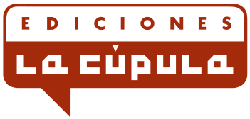

Nazario
Anarcoma. Obra gráfica completa
Ha pasado mucho tiempo desde que Anarcoma, el detective travesti, viese la luz en las páginas de la prensa más insolente de los primeros años 80. Pero el mito sigue arañando el pavimento con sus tacones de aguja…
34,90€
Max
Peter Pank Integral
Peter Pank es el personaje más carismático y popular de los creados por la mente genial de Max. Este punkie de rasgos aguileños y maneras radicales se ha convertido en símbolo de una juventud eternamente peleadora y rebelde que no acepta las reglas impuestas por la sociedad en que le ha tocado vivir. Y es
22,00€
Ana Oncina
Croqueta y Empanadilla 1
Croqueta y Empanadilla es tierno, divertido, y transmite un increíble buen rollo. ¡Para comérselos!
12,20€
Wren McDonald
Sp4rx
La primera novela gráfica de Wren McDonald es un relato de ascendencia ciberpunk donde la acción frenética, las preocupaciones políticas y el espíritu geek conviven para sentenciar el destino de la humanidad.
13,90€
Daniel Clowes
Ghost World
Daniel Clowes conjura una historia tan tierna como objetiva, capturando los temores mundanos y las tragedias cotidianas de dos jóvenes que ya no son niñas, pero que tampoco son aún mujeres.
12,90€
Sibylline / Jérôme D’Aviau
Primeras veces
Un verdadero manifiesto por el placer.
18,00€
Bryan Talbot / Mary M. Talbot
La virgen roja
Mary M. Talbot y Bryan Talbot reconstruyen la vida y las circunstancias de una mujer extraordinaria siempre fiel al signo de la bandera negra y perseverante en sus ideales feministas.
18,90€
Erik Kriek
Lovecraft: Desde el Más Allá
Una lectura aterradora y fascinante que alumbrará nuestros rincones oscuros.
14,50€
Robert Crumb
Génesis (Edición rústica)
El primer libro del Pentateuco, tan exuberante en su temario como rico en imágenes, ha sido una tentación para artistas gráficos de todos los tiempos, si bien nadie hasta ahora había abordado
19,50€
Max
Rey Carbón
La palabra latina filum significa por igual hilo, contorno y perfil. Max imagina, a partir de la fábula de Plinio, una historia en la que hilo (narrativa) y contorno (imagen) son una y la misma cosa, y nos propone un flujo visual libre en el que el dibujo habla por sí mismo y sobre sí mismo.
16,90€
Emily Carrol / Laurie Halse Anderson
Cuéntalo
Desde que comienza su primer año en el instituto Merryweather, Melinda sabe que forma parte de una gran mentira. Algo sucedió una noche del verano anterior que la ha convertido en una marginada y se ve incapaz de verbalizar lo ocurrido. Ahora no tiene amigos
13,50€
Noah Van Sciver
Fante Bukowski
¡A LA VENTA EL 10 DE ENERO DE 2019!
26,50€
Leela Corman
Intimidades
Una novela gráfica hipnótica y desgarradora sobre la vida de los inmigrantes en el Lower East Side de Nueva York a principios del siglo XX, vista a través de los ojos de dos hermanas gemelas cuyas vidas toman trágica y radicalmente caminos diferentes.
18,50€
Carlos García, Perro
Camaleón (rústica)
Camaleón es una obra gráficamente imbatible, toda ella fibra, y sin duda uno de los secretos mejor guardados del cómic español.
13,50€
Juaco Vizuete
El Resentido
El Resentido es un emblema del hombre joven en plena confusión emocional.
18,00€
Mauro Entrialgo
El demonio rojo: Ganas de follar
No podría titularse de otra forma más definitoria: ganas de follar.
18,00€